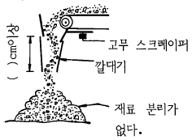
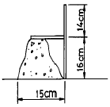
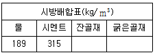

콘크리트기능사 (2002-04-07 기출문제)
1과목: 콘크리트재료
1. 잔골재 A의 조립율(FM)은 3.26이고 잔골재 B의 조립율 (FM)은 2.44이다. 이 골재의 조립율이 적당하지 않아 조립율이 2.8이 되는 잔골재 C를 만들고자 할 때 잔골재 A와 B의 혼합비는?
- 0.75 : 0.65
- 0.36 : 0.46
- 0.46 : 0.36
- 0.25 : 0.95
(정답률: 48%)

2. 조립율(fineness modulus, Fm)이란?
- 굵은골재 및 잔골재의 치수를 나타내는 것을 말한다
- 콘크리트에서 잔골재와 굵은 골재와 비를 말한다
- 골재의 입도를 개략적으로 나타내는 방법을 말한다
- 골재의 유기불순물의 양을 나타내는 시험법을 말한다
(정답률: 34%)
3. 빈틈율 25%인 골재의 실적율은?
- 12.5%
- 25%
- 50%
- 75%
(정답률: 89%)
4. 굵은골재를 흡수율 시험하여 다음과 같은 결과를 얻었다. 시료의 노건조 무게가 430gf이었고, 이 시료의 표면건조 포화상태의 무게가 475gf일때 흡수율은?
- 10.5%
- 9.5%
- 1.1%
- 13.4%
(정답률: 45%)
5. 구조물의 중량을 줄이기 위해 사용하는 경량골재의 비중으로 옳은 것은?
- 2.50 이상
- 2.50 이하
- 2.50∼2.65
- 2.70 이상
(정답률: 47%)
6. 시멘트에 대한 설명으로 옳은 것은?
- 시멘트는 통풍이 잘되는 창고에 저장해야 한다.
- 풍화된 시멘트는 비중이 작아지고 강도도 감소된다.
- 포대 시멘트는 지상 10cm 이상되는 마루에 쌓아야 한다.
- 저장중에 생긴 시멘트 덩어리는 깨트려서 사용해야 한다.
(정답률: 46%)
7. 시멘트 응결에 대한 설명이 맞는 것은?
- 풍화가 되었을 때 응결이 빠르다.
- 수량이 많은 경우일 때 응결이 빠르다.
- 분말도가 낮을수록 응결이 늦다.
- 온도가 높으며 습도가 낮을 때 응결이 빠르다.
(정답률: 46%)
8. 1g의 시멘트가 가지고 있는 전체 입자의 표면적의 합계를 무엇이라 하는가?
- 비표면적
- 총 표면적
- 단위 표면적
- 단위 비표면적
(정답률: 77%)
9. 댐과 같은 콘크리트 단면이 큰 공사에 적합한 시멘트는?
- 중용열 포틀랜드 시멘트
- 보통 포틀랜드 시멘트
- 고로 시멘트
- 백색 포틀랜드 시멘트
(정답률: 75%)
10. 시멘트에 적당한 양의 물을 가하여 혼합한 시멘트 풀이 시간이 경과함에 따라 액체 상태에서 소성상태로 되었을 경우를 무엇이라 하는가?
- 경화
- 풍화
- 응결
- 수축
(정답률: 63%)
11. 고로 슬래그 시멘트에 관한 사항 중 옳은 것은?
- 보통 포틀랜드 시멘트에 비해 응결이 빠르다.
- 보통 포틀랜드 시멘트에 비해 발열량이 많아 균열 발생이 크다.
- 보통 포틀랜드 시멘트에 비해 해수 및 화학 작용에 대한 저항성이 크다.
- 보통 포틀랜드 시멘트에 비해 조기강도가 크다.
(정답률: 70%)
12. 시멘트의 분말도가 높을 경우에 대한 설명중 옳지 않은 것은?
- 콘크리트의 조기강도가 크다.
- 콘크리트의 내구성이 좋다.
- 콘크리트의 작업이 용이하다.
- 콘크리트에 균열이 생길 가능성이 많다.
(정답률: 41%)
13. 콘크리트에 AE제를 혼합하는 주목적은?
- 워커빌리티 증대를 위해서
- 용적을 증대하기 위해서
- 강도의 증대를 위해서
- 시멘트 절약을 위해서
(정답률: 83%)
14. 포졸란(Pozzolan)의 종류에 해당하지 않는 것은?
- 규조토
- 규산백토
- 고로슬래그
- 포졸리스(Pozzolith)
(정답률: 75%)
15. 골재의 동결, 융해, 물, 해수, 기상작용 등에 대한 내구성을 알고자 할 때 필요한 시험은?
- 비중시험
- 체가름시험
- 안정성시험
- 빈틈률시험
(정답률: 71%)
16. 포장 콘크리트에 알맞는 굵은골재의 최대 치수는 몇 ㎜ 이하인가?
- 25㎜
- 40㎜
- 100㎜
- 150㎜
(정답률: 76%)
17. 일반적으로 골재의 비중이란 어느 상태의 비중을 말하는가?
- 습윤상태
- 공기중 건조상태
- 절대 건조상태
- 표면건조 포화상태
(정답률: 78%)
18. 콘크리트의 여러 가지의 성질을 좋게 하기 위하여 사용하는 촉진제에 대하여 틀리게 설명한 것은?
- 프리팩트 콘크리트용 그라우트나 PC용 그라우트에 사용하여 부착을 좋게 한다.
- 수화작용을 빠르게 하는 혼화제이다.
- 콘크리트 속에 시멘트 무게의 1~2% 정도의 염화칼슘을 사용하면 응결이 빨라져 조기강도가 커지게 한다.
- 염화칼슘을 4%이상 사용하면 급속히 굳어질 염려가 있고 장기 강도가 작아진다.
(정답률: 45%)
19. 혼화재료인 플라이 애시 특성에 대한 설명중 틀린 것은?
- 가루 석탄재로서 실리카질 혼화재이다.
- 입자가 둥글고 매끄럽다.
- 콘크리트에 넣으면 워커빌리티가 좋아진다.
- 콘크리트 반죽시에 사용수량을 증가시켜야 한다.
(정답률: 71%)
20. 시멘트와 물을 반죽한 것을 무엇이라 하는가?
- 모르타르
- 시멘트 풀
- 콘크리트
- 반죽질기
(정답률: 86%)
2과목: 콘크리트시공
21. 콘크리트 시공기계에 관한 설명 중 옳지 않은 것은?
- 콘크리트운반기계는 트럭믹서,콘크리트 펌프,손수레, 치기기계는 슈트, 트레미 등이 있다.
- 골재기계는 크러셔, 골재 플랜트 등이 있다.
- 제조기계는 강제식믹서, 가경식믹서 등이 있다.
- 다짐기계는 진동기, 탬퍼, 배치플랜트 등이 있다.
(정답률: 64%)
22. 다음 중 배치믹서(batch mixer)란?
- 콘크리트 재료를 1회분씩 혼합하는 기계.
- 콘크리트 재료를 1회분씩 계량하는 기계.
- 콘크리트를 혼합하면서 운반하는 트럭.
- 콘크리트를 1m3씩 혼합하는 기계.
(정답률: 75%)
23. 현장에서 사용하는 골재의 함수상태, 혼합율 등을 고려하여 현장에서 실제로 사용하는 재료의 성질에 맞추어 고친배합(수정배합)은?
- 시방배합
- 현장배합
- 복합배합
- 경험배합
(정답률: 76%)
24. 단위 골재량의 절대 체적을 구하는데 관계가 없는 것은?
- 공기량
- 단위수량
- 잔골재율
- 시멘트의 비중
(정답률: 30%)
25. 콘크리트의 재령 28일 압축강도가 233kgf/cm2일 때 경험식에 의한 물-시멘트비는?
- 47.0%
- 47.5%
- 48.0%
- 48.5%
(정답률: 35%)
26. 콘크리트의 배합 설계에서 재료의 계량 허용오차는 물의 경우는 얼마 정도인가?
- 1%
- 2%
- 3%
- 4%
(정답률: 73%)
27. 콘크리트 배합설계 할 때 고려하여야 할 사항으로 적당하지 않은 것은?
- 골재는 표면건조 포화상태로 한다.
- 가능한 한 단위수량을 적게한다.
- 굵은골재는 될수록 작은 치수의 것을 사용한다.
- 배합은 충분한 내구성과 강도를 가지도록 한다.
(정답률: 71%)
28. 시방서에 규정된 배합의 표시법에 포함되지 않는 것은?
- 슬럼프(slump)의 범위
- 잔골재의 최대치수
- 물-시멘트비(W/C)
- 물,시멘트, 골재의 단위량
(정답률: 68%)
29. 콘크리트 펌프로 콘크리트를 수송할 때 수송관이 90° 의 굴곡이 1회 있을 경우 수평거리 몇 m정도로 환산하는가? (단, 슬럼프 값은 12cm정도)
- 2m
- 6m
- 8m
- 12m
(정답률: 54%)
30. 다음중에서 뿜어붙이기 콘크리트의 시공에 적합하지 않은 것은?
- 콘크리트 표면공사
- 콘크리트 보수공사
- 터널(tunnel)공사
- 수중 콘크리트 공사
(정답률: 79%)
31. 벽 또는 기둥과 같이 높이가 높은 콘크리트를 연속적으로 칠경우 쳐 올라가는 속도는 단면의 크기, 콘크리트 배합다지기 방법등에 따라 다르나 일반적으로 30분에 얼마 정도가 가장 적당한가?
- 2.5∼3.0m
- 2.0∼2.5m
- 1.5∼2.0m
- 1.0∼1.5m
(정답률: 74%)
32. 콘크리트 치기의 유의할 점 중 옳은 것은?
- 거푸집의 높이가 높을 경우에는 재료의 분리를 방지하기 위하여 거푸집에 입구를 두거나 연직 슈트등을 사용해서 쳐야 한다.
- 상하가 일체로 되는 구조물에서 기둥 콘크리트를 친후 바로 보 부분의 콘크리트를 쳐야 한다.
- 치기 도중에 재료분리된 콘크리트는 반드시 거듭비비기를 하여야 한다.
- 콘크리트치기 도중에 표면에 떠올라 고인 블리딩수가 있는경우 콘크리트의 표면에 도랑을 만들어 흐르게 하여 제거하여야 한다.
(정답률: 58%)
33. 콘크리트의 강도라고 하면 일반적으로 어느 것을 말하는가?
- 압축강도
- 인장강도
- 휨강도
- 전단강도
(정답률: 79%)
34. 조강 포오틀랜드 시멘트를 사용할 경우 콘크리트를 친후 적어도 며칠간은 습윤양생을 해야 하는가?
- 1일
- 3일
- 5일
- 9일
(정답률: 53%)
35. 콘크리트의 건조를 방지하기 위하여 방수제를 표면에 바르든지 또는 이것을 뿜어 붙이기를 하여 습윤 양생을 하는 것은?
- 습윤양생
- 방수양생
- 증기양생
- 피막양생
(정답률: 54%)
36. 수중 콘크리트의 물-시멘트비는 얼마이하를 표준으로 하는가?
- 40% 이하
- 50% 이하
- 55% 이하
- 60% 이하
(정답률: 64%)
37. 콘크리트 운반 중 재료분리가 발생할 염려가 가장 큰 기구는?
- 콘크리트 펌프(pump)
- 경사슈트(shute)
- 벨트컨베이어
- 콘크리트 버킷(bucket)
(정답률: 62%)
38. 수송관 속의 콘크리트를 압축공기로써 압송하며 터널 등의 좁은 곳에 콘크리트를 운반하는데 편리한 콘크리트 운반장비는?
- 운반차
- 콘크리트 플레이서
- 슈트
- 버킷
(정답률: 77%)
39. 그림은 벨트 컨베이어에 의한 콘크리트의 운반을 나타낸 것이다. 재료의 분리방지를 위해 설치하는 깔때기의 길이는 몇 cm이상이어야 하는가? (단, 타설높이가 1m 이상일 때)

- 30
- 40
- 50
- 60
(정답률: 37%)
40. 서중콘크리트에 대한 설명으로 옳은 것은?
- 월평균 기온이 5℃를 넘을 때 시공한다.
- 중용열 포틀랜드 시멘트나 혼합시멘트를 사용하면 좋다.
- 배합은 필요한 강도 및 워커빌리티를 얻는 범위내에서 단위 수량과 시멘트량은 많이 되도록 한다.
- 콘크리트를 비벼서 쳐넣을 때까지의 시간은 30분을 넘어서는 안된다.
(정답률: 44%)
3과목: 콘크리트 재료시험
41. 콘크리트 슬럼프 시험에서 슬럼프 콘 부피의 2/3까지 시료를 넣고 2번째 층을 다질때 다짐대가 콘크리트 속으로 들어가는 적당한 깊이는?
- 7cm
- 9cm
- 12cm
- 16cm
(정답률: 40%)
42. 콘크리트의 슬럼프 시험을 하였다. 슬럼프 콘을 뺀 후의 형상이 아래그림과 같았을때 측정척을 콘크리트의 표면에 일치시킨 것이다. 이때 슬럼프 값은 얼마인가?

- 2cm
- 14cm
- 15cm
- 16cm
(정답률: 68%)
43. 콘크리트의 블리딩 시험은 일정규격의 그릇에 굳지 않은 콘크리트를 몇 cm 높이로 채운후 실시하는가?
- 15± 0.3cm
- 18± 0.5cm
- 23± 0.3cm
- 25± 0.3cm
(정답률: 34%)
44. 모래에 포함되어 있는 유기불순물 시험에 사용하는 표준색용액은?
- 3%의 수산화나트륨 용액과 2%의 탄닌산 용액으로 표준색용액을 만든다.
- 2%의 수산화나트륨 용액과 3%의 탄닌산 용액으로 표준색용액을 만든다.
- 10%의 알코올 용액과 3%의 탄닌산 용액으로 표준색용액을 만든다.
- 5%의 알코올 용액과 5%의 탄닌산 용액으로 표준색용액을 만든다.
(정답률: 44%)
45. 골재의 단위 무게 시험 방법중 충격을 이용하는 방법에서 용기를 떨어뜨리는 높이는 어느 정도인가?
- 20cm
- 15cm
- 10cm
- 5cm
(정답률: 45%)
46. 지름이 15㎝이고 높이가 30㎝인 콘크리트 압축 강도 시험용 공시체의 경우는 다짐대로 각 층을 몇번 다지는가?
- 15회
- 20회
- 25회
- 30회
(정답률: 84%)
47. 콘크리트 압축강도 시험용 공시체의 표면을 캐핑하기 위한 시멘트 풀의 물-시멘트비(W/C)는 어느 정도가 적당한가?
- 30∼35%
- 37∼40%
- 17∼20%
- 27∼30%
(정답률: 57%)
48. 콘크리트의 압축강도 시험용 공시체는 몰드에 콘크리트를 채운 후 몇시간 지나서 된 반죽의 시멘트풀로 공시체의 표면을 캐핑하는가?
- 2∼4시간
- 5∼9시간
- 8∼12시간
- 11∼15시간
(정답률: 43%)
49. 지름이 15cm, 길이가 30cm인 공시체를 사용하여 인장강도 시험을 하였다. 파괴시의 강도가 18tonf이었다면 콘크리트의 인장강도는?
- 25.5kgf/cm2
- 102 kgf/cm2
- 33.4kgf/cm2
- 18.5kgf/cm2
(정답률: 44%)
50. 콘크리트의 휨강도 시험에서 공시체가 지간의 3등분 중앙부에서 파괴 되었을때의 휨강도를 구하는 공식으로 옳은 것은? (단, p:시험기에 나타난 최대하중 ℓ :지간길이(㎝), b:평균나비(㎝), d:파괴 단면의 평균높이(㎝))
- pℓ/bd2
- pℓ/b2d
- p/bd2ℓ
- p/b2dℓ
(정답률: 49%)
51. 3등분 하중장치를 이용한 콘크리트의 휨강도 시험에서 공시체가 지간의 3등분 바깥부분에서 파괴되고 또 하중점에서 파괴단면까지의 거리가 지간의 최소 몇% 이상일때는 이 시험을 무효로 하는가?
- 3%
- 5%
- 10%
- 20%
(정답률: 43%)
52. 굳지 않는 콘크리트 속의 공기 함유량 측정법으로 옳지 않은 것은?
- 공기실 압력법
- 부피법
- 가압주입법
- 무게법
(정답률: 53%)
53. 단위 골재량의 절대체적이 0.75m3이고 잔골재율이 34%일 때 단위 굵은 골재량은 얼마인가? (단, 굵은 골재의 비중은 2.6임)
- 1137kgf
- 1187kgf
- 1237kgf
- 1287kgf
(정답률: 30%)
54. 단위수량이 154kgf일때 물-시멘트비(W/C) 50%의 콘크리트 1m3을 만드는데 필요한 단위 시멘트량은 약 얼마인가?
- 308kgf
- 154kgf
- 77kgf
- 462kgf
(정답률: 61%)
55. 다음표와 같은 시방배합표에서 갇힌 공기량을 1.1%가 되도록 하면 단위 골재량의 절대체적은 얼마인가? (단, 시멘트의 비중은 3.15 임)

- 0.60 m3
- 0.65 m3
- 0.70 m3
- 0.75 m3
(정답률: 32%)
56. 보통 포틀랜드 시멘트 콘크리트 블리딩 시험을 할때 콘크리트를 친 후 블리딩이 대부분 발생하는 시기는?
- 타설직후부터 10분 이내
- 15 ∼ 30분 이내
- 30분 ∼ 1시간 이내
- 1 ∼ 2시간 이내
(정답률: 32%)
57. 골재의 체가름 시험을 하여 알 수 있는 것은?
- 마모량
- 풍화도
- 골재의 모양
- 조립율
(정답률: 63%)
58. 콘크리트의 인장강도 시험에서 재하속도는 공시체가 파괴될때까지 계속적으로 충격없이 매분 얼마의 속도로 하중을 가하는가?
- 1∼2 kgf/cm2
- 3∼6 kgf/cm2
- 7∼14 kgf/cm2
- 15∼20 kgf/cm2
(정답률: 49%)
59. 콘크리트 부재의 설계에서 기준이 되는 재령 28일의 압축강도를 무엇이라 하는가?
- 배합강도
- 배합설계
- 설계기준강도
- 시방배합
(정답률: 60%)
60. 댐콘크리트에서 단위수량은 몇 kgf/m3 이하를 표준으로 하는가?
- 180kgf
- 150kgf
- 120kgf
- 90kgf
(정답률: 20%)
(3.26x + 2.44y) / (x + y) = 2.8
여기서 x는 잔골재 A의 비율, y는 잔골재 B의 비율이다. 이 방정식을 정리하면,
0.46x - 0.8y = -0.728
이 된다. 이를 풀면,
x = 0.36y + 1.582
즉, 잔골재 A와 B의 혼합비는 0.36 : 0.46이 된다. 이는 보기에서 "0.36 : 0.46"이 정답인 이유이다.